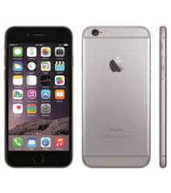

역사
최초의 스마트폰은 사이먼(symon)으로 추정된다.
IBM사가 1992년에 설계하여 그 해에 미국 네바다 주의
라스베이거스에서 열린 컴댁스에서 컨셉 제품으로 전시되었다.
스마트폰은 컴퓨터를 결합한 무선 휴대전화기이다. pc에서 실행되는 운영체제보다 작게 만든 모바일운영체제를 탑재하여 인터넷 검색, 전자우편, 간단한 문서 편집, 카메라, 오디오 및 비디오 재생 등 pc의 기능을 거의 모두 갖추고 있다.
최초의 스마트폰은 사이먼(symon)으로 추정된다.
IBM사가 1992년에 설계하여 그 해에 미국 네바다 주의
라스베이거스에서 열린 컴댁스에서 컨셉 제품으로 전시되었다.
안드로이드(영어: Android)는 휴대 전화를 비롯한
휴대용 장치를 위한 운영 체제와 미들웨어,
사용자 인터페이스 그리고 표준 응용 프로그램
(웹 브라우저, 이메일 클라이언트, 단문 메시지 서비스(SMS),
MMS) 등을 포함하고 있는 소프트웨어 스택이자
모바일 운영 체제이다.
아이폰(영어:iphone)은 2007년1월9일,
애플이 발표한 휴대전화 시리즈이다.
미국 샌프란시스코에서 열린 맥월드 2007에서 애플의 창업자중
한명인 스티브 잡스가 발표했다.
 |
 |
 |
 |  |
| 이름 | 제조사 | 사진 | 특징 |
|---|---|---|---|
| 갤럭시 노트20 | 삼성전자 | 120Hz 가변형 주사율 빨라진 펜 반응속도 두종류로 나옴 |
|
| 아이폰12(가칭) | 애플 | 출시예정 총4종류로 나올예정 |
|
| LG벨벳 | LG전자 |  |
매스 프리미엄 노치 디자인 |
| 갤럭시 z폴드2 | 삼성전자 |  |
폴더블폰 |